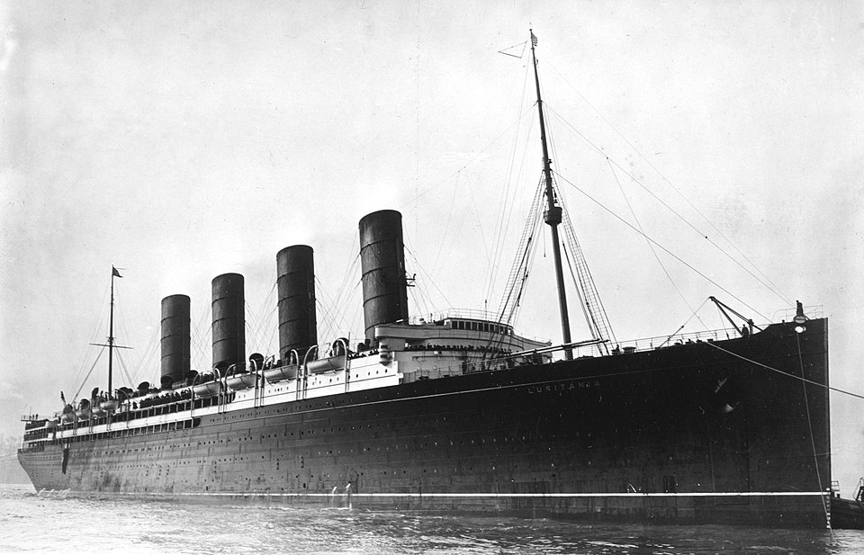

RMS Lusitania

| Built | 1906-1907 |
|---|---|
| Builder | John Brown & Co., Clydebank, Scotland |
| Owner | Cunard Line |
| Length | 787 ft (239.9 m) |
| Gross Tonnage | 31,550 GT |
| Top Speed | 25-26 knots |
| Maiden Voyage | September 7th, 1907 |
| Sunk | May 7th, 1915 |
| Location of Sinking | Off Kinsale Head, Ireland |
| Lives Lost | 1,198 |
| Survivors | 764 |
Background and Construction
The RMS Lusitania was a British ocean liner operated by the Cunard Line and, for a brief period after her maiden voyage in 1907, the largest and fastest passenger ship in the world. She was built to reclaim British prestige on the North Atlantic crossing at a moment when German shipping companies were beginning to dominate the route. Unlike her White Star contemporaries, including the ill-fated RMS Titanic, which was designed around luxury and sheer scale, the Lusitania was engineered first and foremost for speed.
In the first years of the twentieth century, the German shipping companies Hamburg-Amerika and Norddeutscher Lloyd had seized the speed record for Atlantic crossings. Cunard's response was a government-backed program to build two superships, the Lusitania and her sister Mauretania, that would reclaim the Blue Riband, the informal prize awarded to the fastest transatlantic liner.
The Lusitania's keel was laid in June 1904, and she was launched in June 1906. Her four steam turbine engines gave her an extraordinary top speed of 25 to 26 knots. On her second eastbound voyage in 1907, she captured the Blue Riband, crossing in just under five days. Her construction at the John Brown shipyard was partly subsidized by the British government, which retained the right to requisition the vessel in wartime, an arrangement that foreshadowed the circumstances of her destruction.
Service and the Atlantic Race
For seven years, the Lusitania operated as one of the crown jewels of transatlantic travel. She offered three classes of passenger accommodation and was particularly celebrated for the quality of her first-class interiors. She crossed the Atlantic hundreds of times between 1907 and 1915, establishing herself as one of the most reliable and prestigious ships on the route.
Her rivalry with Cunard's own Mauretania was fierce, the two sister ships traded the Blue Riband back and forth over the years, but both were eventually eclipsed in terms of raw size by the giant Olympic-class liners of the White Star Line, such as the RMS Titanic. The Lusitania compensated with speed and refinement rather than sheer scale.
World War 1 and the Fateful Voyage
When war broke out in August 1914, the Lusitania continued her commercial service. The British Admiralty did not immediately requisition her, though she was officially designated an armed merchant cruiser. Germany declared the waters around the British Isles a war zone in February 1915, warning that enemy merchant ships were liable to be sunk.
The German embassy in the United States placed advertisements in American newspapers on May 1, 1915, the very day the Lusitania departed New York on Voyage 202, warning travelers that ships entering the war zone did so at their own risk. Most passengers dismissed the warnings. The ship carried 1,962 people: 1,257 passengers and 705 crew, including 197 American citizens.
The Sinking
On the afternoon of May 7, 1915, the Lusitania was steaming off the southern coast of Ireland, approximately eleven miles from the Old Head of Kinsale, when Kapitänleutnant Walther Schwieger, commanding the German submarine U-20, fired a single torpedo at her starboard side at 2:10 PM.
The torpedo struck just below the bridge. Almost immediately, a second, much larger explosion rocked the ship, a mystery that has never been definitively resolved. Theories have ranged from ignited coal dust to munitions in the cargo hold. The Lusitania listed severely and sank in just eighteen minutes — far too quickly for an orderly evacuation. Many of the lifeboats could not be launched due to the extreme list of the ship.
"Think of it — eighteen minutes from the first torpedo to the bottom. There was no time to do anything properly." — Survivor account, 1915Casualties and Aftermath
Of the 1,962 people aboard, 1,198 died, among them 128 American citizens. The loss of American lives caused immediate outrage in the United States, complicating President Woodrow Wilson's policy of neutrality. The sinking became one of the most powerful propaganda tools available to those who favored American entry into the war, and it contributed materially to shifting American public opinion over the following two years.
Germany defended the sinking on the grounds that the Lusitania was carrying war materials, a claim that archival research has since confirmed to a partial degree. The legal and moral arguments surrounding the sinking continued to be debated for decades.
Legacy
The Lusitania is remembered as one of the defining maritime tragedies of the twentieth century. The wreck, which lies at a depth of about 300 feet off the Irish coast, was designated a controlled site under Irish law in 1995. In the landscape of great maritime disasters, the Lusitania stands alongside the RMS Titanic as one of the two defining shipwrecks of the early twentieth century — both British liners, both lost with enormous casualties, and both carrying with them enduring questions about hubris, negligence, and the limits of human engineering.